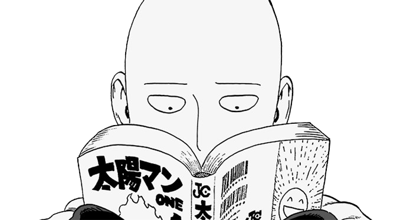

Ajouter
Nom de votre bot
Brève description pour montrer à quel point votre bot est incroyable ! Rappelez-vous que si vous voulez savoir qui était le mec sexy qui a fait ce site, c'était Aposh !
AJOUTER
SUPPORT